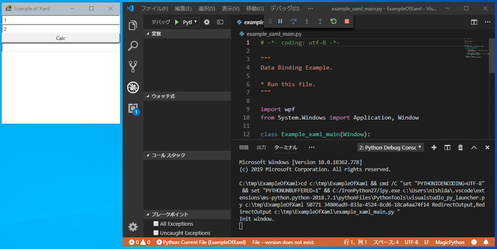

IronPythonのGUIをWPF/XAMLで作成してみます。
こちらのスクリプトを使って説明します。[Clone or download]からzipファイルをダウンロードして、Visual Studio Codeで実行してみてください。
スクリプトの実行方法は、「IronPythonのスクリプトをVisual Studio Codeで実行する方法」を読んで、実際に動作させてみてください。
正常に動作するとウィンドウ（Example of Xaml）が表示されます。Calcを押すと足し算の結果がテキストボックスに表示されます。

WPFとXAMLの詳しい内容が知りたい方は、「WPFとXAMLの関係とは？ XAMLの基礎を学ぶ」などを読んでみてください。
ポイント
XAMLファイルを表示させるのは、以下の部分です。
import wpf
from System.Windows import Application, Window
class Example_xaml_main(Window):
def __init__(self):
wpf.LoadComponent(self, 'example_xaml_view.xaml')Windowクラスを継承したクラス内で、wpf.LoadComponentをXAMLファイルを指定して実行すればOKです。
XAML自体の作成は、Visual Studioで作成しました。（インテリセンスやGUIの結果表示は便利です）
今回のGUIをVisual Studio 2017で作成すると、こんな感じ。
<Window x:Class="WpfApp1.MainWindow"
xmlns="http://schemas.microsoft.com/winfx/2006/xaml/presentation"
xmlns:x="http://schemas.microsoft.com/winfx/2006/xaml"
xmlns:d="http://schemas.microsoft.com/expression/blend/2008"
xmlns:mc="http://schemas.openxmlformats.org/markup-compatibility/2006"
xmlns:local="clr-namespace:WpfApp1"
mc:Ignorable="d"
Title="MainWindow" Height="450" Width="800">
<StackPanel>
<TextBox x:Name="textBox1" HorizontalAlignment="Stretch" Text="1"/>
<TextBox x:Name="textBox2" HorizontalAlignment="Stretch" Text="2"/>
<Button x:Name="button1" HorizontalAlignment="Stretch" Content="Calc" Click="button1_Click" />
<TextBox x:Name="textBox3" HorizontalAlignment="Stretch" Text=""/>
</StackPanel>
</Window>IronPythonnで使う際に必要なものだけ残します。（自分はトライ＆エラーで編集しました）
<Window
xmlns="http://schemas.microsoft.com/winfx/2006/xaml/presentation"
xmlns:x="http://schemas.microsoft.com/winfx/2006/xaml"
Title="Example of Xaml" Height="300" Width="300">
<StackPanel>
<TextBox x:Name="textBox1" HorizontalAlignment="Stretch" Text="1"/>
<TextBox x:Name="textBox2" HorizontalAlignment="Stretch" Text="2"/>
<Button x:Name="button1" HorizontalAlignment="Stretch" Content="Calc" Click="button1_Click" />
<TextBox x:Name="textBox3" HorizontalAlignment="Stretch" Text=""/>
</StackPanel>
</Window>IronPythonのスクリプトで、コンポーネントを使うためにx:Nameで名前を設定しておきます。
（C#のコードビハインドで利用する場合と同じです）
Buttonを押した時の動作は、XAML上でClick="button1_Click"とするだけでOKです。
pyファイルに、イベントを"+=”などで追加する必要はありません。
あとは、
def button1_Click(self, sender, e):
処理を書きます。Python言語で使えるGUIとしては、比較的簡単なものではないでしょうか？（他にはKivyくらいしか思いつきません）